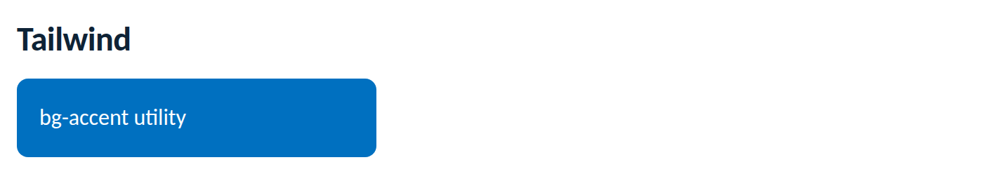

Themes
Map the Novus tokens into Tailwind's theme so every utility resolves to a token -
then bg-accent, text-text, and rounded-md are
on-brand by construction and re-tune in dark mode for free. Never copy hex values
into the Tailwind config: reference the CSS variables.
/* app.css */
@import "novus-design-kit/tokens.css";@theme inline {
--color-accent: var(--accent);
--color-accent-text: var(--accent-text);
--color-bg: var(--bg);
--color-surface: var(--surface);
--color-text: var(--text);
--color-muted: var(--text-secondary);
--color-border: var(--border);
--font-sans: var(--font-sans);
--radius-md: var(--radius-md);
}theme:{extend:{colors:{'blue-500':'var(--blue-500)',accent:'var(--accent)',bg:'var(--bg)',
surface:'var(--surface)',text:'var(--text)',border:'var(--border)'},
fontFamily:{sans:'var(--font-sans)'},borderRadius:{md:'var(--radius-md)'}}}<!-- layout via Tailwind, visual identity via the kit -->
<div class="flex flex-wrap gap-4">
<button class="btn btn--primary">Talk to us</button>
<span class="badge badge--success">On track</span>
</div>Nothing extra: because every mapped value is a CSS variable, the kit's dual-trigger
dark mode re-tunes your Tailwind utilities automatically. Don't use Tailwind's
dark: variant to restyle brand colours, the tokens already carry both
modes.
Rendered from this guide's own sample project, executed and verified on 2026-08-26 against tailwindcss 4.3 via @tailwindcss/vite.

var(--…)..btn/.card out of utilities, use the shipped classes and compose around them.